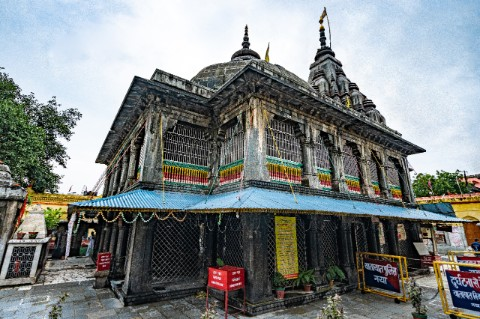

Vishnupad Temple

Vishnupad Temple, Gaya, Bihar – History, Importance and Features
Vishnupad Temple, located in Chand Chaura, Gaya district of Bihar, is a major Hindu temple dedicated to Lord Vishnu. This temple is situated on the banks of the Falgu River and its main attraction is the footprints of Lord Vishnu, which are engraved on a black basalt stone.
It is believed that this temple was built in the 18th century by Maharani Ahilyabai Holkar of Indore. This temple attracts devotees not only from India but also from abroad due to its religious and historical significance.
History of Vishnupad Temple
The history of this temple is very ancient and this temple is described in Hindu religious texts. According to mythological belief, Lord Vishnu sent a demon “Gayasura” under the earth by pressing him with his feet. This is the reason why the footprints of Lord Vishnu are present here.
The architecture of the temple is also amazing.
Year of construction: 1787 (renovated by Maharani Ahilyabai Holkar)
Height of the temple: Around 100 feet
Number of pillars: 44 (made of large granite stones)
Main sanctum sanctorum: There are 40 cm long footprints of Lord Vishnu here, which are surrounded by silver railings.
Golden flag: A 51 kg gold flag is also installed here, which was donated by a devotee.
Other attractions:
A huge unbroken banyan tree (Akshayavat) is also located in the temple complex, which is considered extremely important from a religious point of view.
Vishnupad Temple Relation with Lord Buddha
This temple is important not only for Hindus but also for Buddhists. It is said that Lord Buddha visited this area when he was in search of knowledge. This area of Gaya holds an important place in his life, as Bodh Gaya is located nearby, where he attained enlightenment.
Vishnupada Temple, which is located in Gaya, Bihar, holds special significance not only for the followers of Hinduism but also for the followers of Buddhism. Lord Buddha has a deep connection with this region, as this is the place where he spent time during his search for salvation and enlightenment.
Arrival of Lord Buddha to Gaya
Lord Buddha visited Gaya before and after his enlightenment. Bodhgaya, where he attained enlightenment under the Bodhi tree, is located just a few kilometers away from Vishnupad Temple. Lord Buddha is said to have meditated on the banks of the Phalgu River, which flows close to the Vishnupad Temple.
Mention in Vishnupad Temple and Buddhist texts
This place has been mentioned in ancient Buddhist texts. According to Buddhist tradition, Lord Buddha visited this area of Gaya as a spiritual and religious place.
Importance of Gaya in Buddhism
Buddhist followers consider the Vishnupad Temple as an important pilgrimage site as it is the place where Lord Buddha meditated. Many Buddhist monks still meditate and pray around this temple. During the propagation of Buddhism, Gaya and Vishnupad Temple became important centers
Confluence of Buddhism and Hinduism
The area of Vishnupad Temple is important for both Hinduism and Buddhism. Hindus worship Lord Vishnu here, while Buddhist followers see it as a holy site associated with Lord Buddha.
Thus, Vishnupad Temple and Lord Buddha have been deeply connected, making it a spiritual place not only for Hindus but also for Buddhists.
Importance of Vishnupad Temple
1. Pind Daan and Pitru Tarpan:
In Hinduism, Gaya is considered the most sacred place for the salvation of ancestors. Thousands of people come to this temple especially during Pitru Paksha (September month) to offer Pind Daan for the peace of the soul of their ancestors. It is said that by offering Pind Daan here, ancestors attain salvation.
2. Festivals and Celebrations:
Pitru Paksha Mela: This temple is extremely crowded especially during Pitru Paksha.
Shri Vishnu Jayanti and Shradh Paksha: Special pujas and havans are performed here during this time.
Ram Navami and Kartik Purnima: Thousands of devotees come to visit the temple on these occasions.
3. Tourism and Religious Travel:
This temple provides spiritual peace to its devotees. The area is close to Bodh Gaya, Mahabodhi Temple and other religious places, making it an important center of religious tourism.
How to reach Vishnupad Temple, Gaya?
By Air:
The nearest airport is Gaya International Airport, which is about 7-8 km from the temple.
By Rail:
Gaya Junction Railway Station is located at a distance of about 4 km from here.
This station is well connected to major cities of India like Delhi, Kolkata, Mumbai and Varanasi.
By Road:
Gaya can be easily reached by road from major cities of Bihar.
The distance from Patna to Gaya is about 100 km, which can be covered in 2-3 hours by road.
Autos, taxis and rickshaws are available from Gaya Bus Stand to Vishnupad Temple.
Conclusion
The Vishnupad temple is an extremely sacred place in Hinduism. This temple is not only famous for worshiping the footprints of Lord Vishnu, but devotees visiting here also perform tarpan and pinddaan for their ancestors. Its historical and religious significance makes it one of the major pilgrimage sites in India. If you are interested in spirituality and religion, then this temple is a must on your travel list.
“Jai Shri Vishnu!”